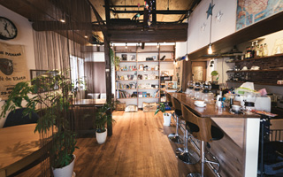
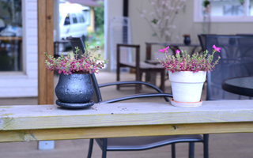

Design for Smile.
快適なオフィスを
デザインする
CONCEPT
“働きたくなる空間”をデザインする
ことで
人々を幸せにする。
私たちは、オフィスに特化した空間デザイン専門としております。その理由は、「働きたくなる空間で仕事ができれば多くの人を幸せにできるのではないか」と考えるためです。そんな想いの株式会社Cresta Designだからこそできる空間デザインを提供させていただきます。
Works

新規サイトを公開しました。今回のサイトは白と黒を基調にしたミニマルなデザインになっています。

新規サイトを公開しました。今回のサイトは白と黒を基調にしたミニマルなデザインになっています。
新規サイトを公開しました。今回のサイトは白と黒を基調にしたミニマルなデザインになっています。
Service
Hearing
Planning
Direction